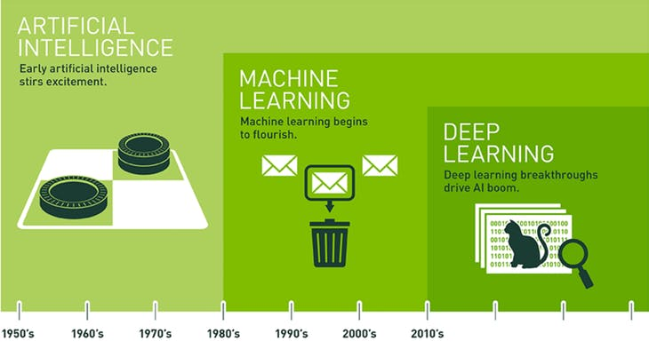

Godfather of deep learning
Geoffrey Hinton
Life and Career
1970 年 英國劍橋大學實驗心理學學士學位
1978 年 愛丁堡大學人工智慧博士學位
- 薩塞克斯大學
- 加州大學聖迭戈分校
- 劍橋大學
- 卡內基梅隆大學
- 倫敦大學學院
- 多倫多大學計算機科學系教授
2013 年 Google 併購他創辦的 DNNresearch 公司
人工智慧簡史

新型的神經網絡（現被稱為「Hopfield網絡」）
About Me
- I am Cathy from Taiwan, Taichung